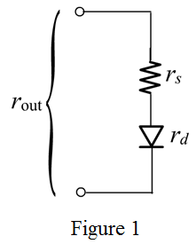
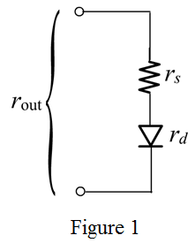

The small signal resistance connected, in series with the resistance,
in series with the resistance,  is shown in Figure 1.
is shown in Figure 1.

All the diodes are in parallel combination and characteristics are also same.
Calculate the current through each diode.
Therefore, the current through the each diode is .
Calculate the small signal resistance , .
Substitute in equation.
Therefore, the small signal for single diode is .
Calculate the equivalent resistance, .
Substitute in equation.
Therefore, the equivalent resistance is .
When one diode is conducting the current through the diode is .
Calculate the small signal resistance.
Therefore, the small signal resistance is .
The parallel combination of the diodes can be considered as equivalent to a single diode having the junction area ten times as that of a single diode. So in both the cases the small signal resistances are same.
Consider the resistance is connected in series with the diode.
Since the small signal resistance, is obtained as which is to be connected in series with the resistance .
The equivalent resistance of the 10 parallel-connected diodes is,
Substitute the values in equation.
Therefore the equivalent resistance is .
The small signal resistance connected, in series with the resistance, is shown in Figure 1.

From Figure 1, the expression for series resistance is,
Substitute in equation.
.
Therefore, the equivalent resistance of the 10 parallel connected diodes is and the series resistance is .